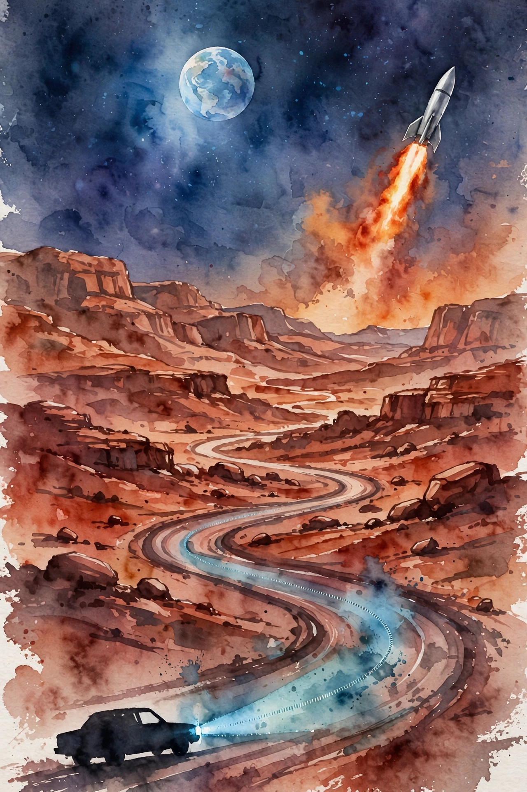
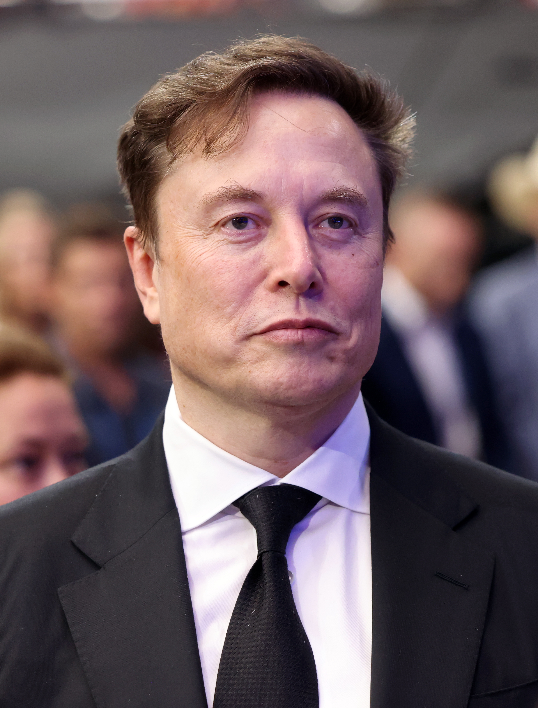

Lex Fridman track index / Companion
Lex Fridman Podcast · Episode 2 · Companion
Elon Musk on SpaceX, Mars, Tesla Autopilot, and Optimus
Crew Dragon and a prayer, the Raptor engine past the Russian record, pricing a ticket to Mars from a billion dollars a ton, garbage collection for laws, Autopilot's latency budget, and the four-word life advice. The full conversation in order.

Illustration. The two frontiers: a rocket for Mars, a car that sees. AI-generated watercolor.

Photo. Elon Musk, in his third appearance on the podcast. Photo by Gage Skidmore, CC BY-SA 4.0, via Wikimedia Commons.
Watch. The official episode video. Chapter times above are proportional estimates. Use the chapter menu to follow along.
The Wisdom Index: every nugget in this companion
Source fact A claim from the episode transcript. Interpretation My read on what it means. Facts carry episode times. Times marked ~ are proportional estimates from word position, since the transcript has no timestamps. Transcripts are auto-generated captions, so chapters paraphrase rather than quote.
~00:00
The Prayer Before Demo-2
Source fact This is Musk's third appearance on the podcast. The talk opens on May 30, 2020, when SpaceX flew humans to orbit for the first time.
Crew Dragon Demo-2 was extremely stressful. Musk says he racked his brain, NASA racked its brain, and neither could find one more way to raise the odds. Then they launched. He is not a religious man. He got on his knees and prayed anyway.
Success brought relief, not elation. Later missions were easier to enjoy. Inspiration4, the first all-civilian orbit, flew higher than any human mission in 30 to 40 years. Only a Hubble servicing flight went higher since Apollo. Musk calls Apollo a possible high watermark for humanity and finds that thought tragic.
It is now 49 years since the last moon mission. His answer: build a science base on the moon, like the one in Antarctica, then go to Mars.
~00:09
Starship: Production Is the Hard Part
Source fact Musk is the chief engineer of SpaceX. When he watches a launch, he does not see beauty. He sees a list of risks.
Starship's hardest problem is not the design. It is engine production. Raptor is a full-flow staged-combustion engine running at 300 bar of chamber pressure, past the Russian RD record near 267 bar. The difficulty climbs faster than the pressure: 10 percent more pressure means roughly 50 percent more pain. SpaceX had to invent new alloys that did not exist.
Chamber pressure: past the Russian record
Hover any bar. Higher pressure means higher power density, and much higher pain.
Source: Lex Fridman Podcast, Elon Musk episode, ~00:12. Both figures are Musk's statements in the episode.
The prize is full and rapid reusability, the holy grail of rocketry. No orbital rocket has ever done it. The plan: catch the booster with the launch tower's chopstick arms to save the weight of landing legs. Musk is confident it can work now. The physics pencils out. For a long stretch he was not sure success was even in the set of possible outcomes.
the physics pencils out
Elon Musk on Starship's feasibility · ~00:18
Asked for his source of strength, he rejects the question. He does not need one. Quitting is not in his nature. He does not care about optimism or pessimism. The job gets done.
His method gets its clearest statement here. First, check physics: energy and momentum must balance or the idea dies. Second, think in the limit. Ask what a part costs at a million units a year. If it stays expensive, volume is not the problem, the design is. Third, price the raw materials. A pile of aluminum, steel, and copper sets the floor for what a rocket can cost. Everything above that floor is the cost of shaping atoms.
Nugget 1 · Building
Prototypes are easy. Production is hard.
What happened. Raptor beats every engine on paper, but the design is not the battle. Building thousands of identical, reliable engines is.
Why it matters. Most ambitious projects die between the demo and the factory. The demo proves physics. The factory proves the business.
The principle. Judge a plan by its hardest step, not its cleverest one. If production is the wall, start there.
Nugget 2 · Thinking
Think in the limit
What happened. Musk prices every part twice: at today's volume and at a million units a year. He also prices the raw atoms, the magic-wand number no design can beat.
Why it matters. Limits expose the true cost driver. If the price survives scale, the design is wrong, not the volume.
The principle. For any expensive thing, ask what it costs at huge scale and what its atoms cost. The gap between those numbers is your real problem.
~00:30
Pricing the Road to Mars
Source fact Musk's estimate for landing humans on Mars: best case five years, worst case ten. The real optimization is cost per ton to the Martian surface.
Today one ton to Mars costs on the order of a billion dollars. No amount of money can buy a ticket. To build a self-sustaining city, the cost must fall by a factor of a thousand, to about a million dollars a ton, ideally less. The city needs at least a million tons of cargo: factories, refineries, chip fabs, everything.
The cost of one ton on Mars
Hover any bar. The axis is logarithmic: each step is 10x.
Source: Lex Fridman Podcast, Elon Musk episode, ~00:34. Both figures are Musk's statements in the episode.
The great filter is self-sufficiency. The city counts as a pass only if it survives when ships from Earth stop coming, for any reason. Miss one critical input and it dies, like a crew without vitamin C.
The deadline is the sun. Earth spans 4.5 billion years. In about 500 million more, the sun will make Earth too hot for life. That span is only 10 percent longer than Earth's whole age. Stephen Hawking put the civilizational risk at about 1 percent per century. Musk frames Mars as insurance:
life insurance for life
Elon Musk on why Mars matters · ~00:38
On the launch economics, Falcon 9 is the only reusable rocket flying. The booster and fairing return, but the upper stage does not, at ten million dollars or more each. Marginal cost per flight runs 15 to 20 million dollars. Starship aims for one to two million per launch with over 100 tons to orbit. No new physics is required. Only brutal engineering.
Nugget 3 · Deadlines
Insure against the certain
What happened. Musk treats Mars as life insurance. The sun will end Earthly life on a known schedule, and smaller disasters can strike at any time.
Why it matters. People discount slow certainties and overweight fast risks. A deadline 500 million years out still beats every quarterly target for importance.
The principle. Separate probability from importance. Buy insurance for the important, even when the probable looks safe.
~01:02
Laws, Money, and Garbage Collection
Source fact For a Mars government, Musk suggests direct democracy: people vote on laws themselves, laws stay short enough to understand, and every vote is transparent.
Then his sharper point: rules need garbage collection. The Constitution is like C, with no built-in cleanup, and he wants Java-style collection. Laws should die on their own unless actively defended. Removing a law should be easier than adding one: 60 percent to pass, 40 percent to repeal. Without this, rules pile up until civilization is Gulliver tied down by a thousand strings.
Money gets the same systems treatment. Money is a database for resource allocation across time and space. Banks still run it on old mainframes in batch mode, and governments hold editing privileges they use to print more, a quiet tax. Crypto is an attempt to cut that error. Bitcoin is too slow for daily use. Dogecoin moves more volume with lower fees, and its fixed yearly issuance means inflation fades over time. He is not Satoshi Nakamoto, and credits Nick Szabo for the ideas behind Bitcoin.
Nugget 4 · Systems
Garbage-collect your rules
What happened. Musk argues that laws are immortal while humans are not, so rules only accumulate. Mars should give every law a sunset and a repeal threshold below the passing threshold.
Why it matters. Every system with creation and no deletion becomes bloatware. The same rot hits codebases, companies, and countries.
The principle. Build deletion into anything that accumulates: laws, code, commitments. Make removal cheaper than addition.
~01:14
Autopilot: Photons In, Vectors Out
Source fact Tesla's self-driving effort started on Mobileye, then went fully from scratch on hardware and software. Musk thought it would be very hard. It was way harder than that.
The problem is to recreate human driving in silicon. Eyes become cameras. The biological net becomes neural nets. The core task is perception: turn a flood of photons into a compact vector space of cars, people, lane lines, and lights. Once that space is accurate, control is like a video game. Hard, but not the hard part.
Humans underrate their own vision. The brain paints color into the periphery where the eye has few receptors. It fills the blind spot. Then it forgets almost everything, distilling the scene to the smallest useful set of objects. Tesla must copy all of it, including object permanence: the kids behind the truck are still there when you cannot see them.
The engineering goes deep. Eight cameras feed raw photon counts, skipping the image processor entirely, which saves 13 milliseconds of latency. Total pipeline latency runs about 150 milliseconds, but jitter hurts more than latency: 100 milliseconds of timing slop can throw control off by a fifth of a second. Auto-labeling multiplies human labelers' output by a hundred times or more.
FSD beta disengagements per million miles fall fast. Musk's bar for release: not human-level, but two to three times safer than the average human.
The latency budget
Hover any bar. Jitter, the unpredictable part, is the real enemy.
Source: Lex Fridman Podcast, Elon Musk episode, ~01:30. All three figures are Musk's statements in the episode.
~01:49
Optimus and the Adorable Robot
Source fact Tesla's humanoid robot, codenamed Optimus, reuses the Autopilot inference computer and training. A decent prototype was expected toward the end of the next year.
The first jobs are the ones humans avoid: dangerous, boring, or injury-prone work. Musk pairs that future with some form of universal basic income. More Tesla Bots than Tesla cars is possible one day.
Then a turn Lex pushes: companionship. Musk admits he had not thought about it, but sees it. A home robot can be flawed for a long while and stay lovable. R2-D2 and C-3PO won hearts because of their quirks, not despite them. Imperfections mapped to the owner's own quirks could make an incredible buddy. Driving allows no mistakes. Home allows many.
~02:01
History, Putin, and Soviet Rockets
Source fact Musk calls Dan Carlin's Hardcore History the greatest podcast ever. He once recorded an episode with Carlin on how fast-moving technology decides wars.
History's lesson, to him: the line between good and evil runs through every human heart. All of us can do either. One book defeated him: The Court of the Red Tsar, on Stalin. He had to stop reading. Too dark.
Asked if he would join a Lex interview with Vladimir Putin, he says yes without hesitation. On Soviet engineering, he voices admiration: some of the most impressive rocketry in history came from the USSR. Reading Russian test-stand data, with methalox engines near 380 seconds of specific impulse, helped push SpaceX toward methane for Raptor.
~02:15
Meme Review: Nuclear, Hunger, and Museums
Source fact In a meme review, Musk rates nuclear power highly, gives the Laika meme an 11 out of 10, and scores a Sistine Chapel meme a 9.
On nuclear: he favors it where natural disasters are not extreme, and calls the fear overblown. After Fukushima he flew there, donated a solar system for a water treatment plant, and ate locally grown vegetables on television. Coal plants, he says, are 100 to 1,000 times worse for health than nuclear plants.
On world hunger: six billion dollars cannot end it. The world grows more food than it can consume. Hunger comes from war and strife, not from a lack of money. On the British Museum: empires did what empires did, and judging 300-year-old acts by today's morals fails everyone. The museum keeps artifacts accessible, which he calls a net good.
~02:34
Try to Be Useful
Source fact Asked for life advice, Musk's answer is four words:
try to be useful
Elon Musk's advice to the young · ~02:36
Contribute more than you consume. Aim for positive net contribution to society. Do not chase leadership for its own sake. The best leaders are often the reluctant ones.
Grow the pie instead of fighting over it. A zero-sum mindset makes taking from others the only path up. The economic pie grew enormously, so the real game is to add to it. He praises Joe Rogan for celebrating others instead of competing with them.
On learning: read broadly, build a rough map of all knowledge, then find the overlap of what you are good at, what you like, and what helps. As a kid he read the encyclopedia straight through.
On love: it is the foundation under everything. He wants humanity multiplanetary because he loves humanity, dark chapters included. The meaning of life earns the Hitchhiker's answer: the universe is the answer, and the hard part is to find the right questions to ask about it. Expand consciousness, biological and silicon, to get better at asking.
when something is important enough you do it even if the odds are not in your favor
Elon Musk, closing line of the episode · ~02:44
Nugget 5 · Purpose
Try to be useful
What happened. Asked what young people should do with their lives, Musk skips status and passion. The test is net contribution: give more than you take.
Why it matters. Usefulness compounds. Status does not. A useful life stays a good life even with nobody watching.
The principle. Measure weeks by net contribution. Grow the pie for everyone instead of slicing it thinner.
Nugget 6 · Motive
Love is the engine
What happened. Musk says the Mars mission runs on love of humanity. Without that love, none of the engineering would matter to him.
Why it matters. Motives set the ceiling. A mission built on love survives the decades that a mission built on ego cannot.
The principle. Check the motive behind your biggest goal. If it is not love of something real, find a better goal.